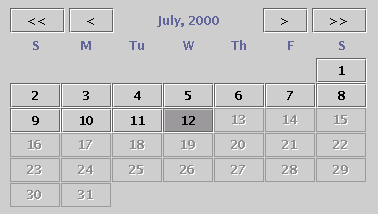
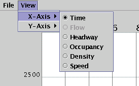

Data Plot 
1. Detectors
2. Dates
3. Axis
4. Smoothing
5. Printing
6. Import/Export
Run DataPlot
1. Detectors
Data Plot has access to data from over 4000 traffic detectors. To plot a graph, you must know the index numbers for the detectors you are interested in. At this time, there is no online reference; it is recommended that you obtain a current All Detector Report for reference.You must select at least one detector to get DataPlot to make graphs. This is done by entering the detector index number at the bottom of the window, and pressing [Enter]. As many as ten individual detectors may be plotted at one time, although if more than one detector is selected then only one date may be plotted.
In addition to plotting individual detectors, Data Plot can also create composite detectors. A composite detector is a group of detectors which are averaged together and plotted as a single line on the graph. To create a composite detector, just enter two or more detector index numbers, with a space between each. This is useful for plotting mainline stations with multiple days.
An advanced feature of composite detectors is the ability to include ramp detectors in the composite. This is done by adding a plus "+" or minus "-" before a detector index. This has the effect of adding a ramp volume to the total before computing the average volume. Ramp detectors have no effect on the occupancy, density, or speed graphs. Note: all mainline detectors must be specified before any ramp detectors, because after a "+" or "-", all detectors are treated as ramp detectors.
2. Dates
At least one date must be selected in addition to at least one detector. This is done using the date selection calendar in the lower left corner of the window. When the program is first started, the current month will be visible on the calendar. Each date on the calendar is a toggle button to select that date for plotting. Dates which do not have data available will be grayed out and cannot be selected. Up to ten different dates may be plotted for one detector (or composite detector). If more than one detector has been selected, then only one date may be selected.At the top of the date selection calendar, there are four buttons for selecting the month and year to be displayed. The "<<" and ">>" buttons select the previous and next years. The "<" and ">" buttons select the previous and next months.
3. Axis
To change the X and Y axis, select the View menu at the top of the window. One X-axis and up to five Y-axiseses may be plotted on the graph at one time. Either one may be set to any of Time, Flow, Headway, Occupancy, Density, or Speed. Time is simply the time of day, ranging from midnight to midnight of the selected date(s). Flow is the flow rate in vehicles per hour. Headway is the spacing between vehicles, in seconds. Occupancy is a measurement of the percent of time a detector is "occupied". Density is displayed as the number of vehicles per mile. Speed is displayed in miles per hour. Note: To compute density and speed, each detector must be assigned an appropriate average field length. These values are still being tweaked, so for now, density and speed may not be accurate for all detectors. For a somewhat more detailed description of this stuff, look here.Once an axis has been selected, it is possible to "zoom in" on a smaller range of that axis. For a vertical axis, this is done by two buttons on the right side of the window, "+" and "-". The "+" button zooms in to a smaller range of values on the graph, and the "-" button zooms out to a larger range of values. Once zoomed in, the scroll bar next to those buttons may be used to select the actual range for the zoomed in view. There are also buttons and a scroll bar for controlling the horizontal axis just below the graph. They work in the same manner.
4. Smoothing
The "smoothing" of the graph is the sampling period of each point plotted on the graph. Data is collected in 30 second intervals, so the sampling period must be a multiple of 30 seconds. There are 17 pre-selected sampling periods which may be chosen. Based on the zoom level of the time axis, only certain sampling periods are available for selection. Data Plot only makes available the sampling periods which would plot between 20 and 200 points. This range was chosen because less than 20 points is uninteresting, and more than 200 points is too much information.It is possible to see the points themselves, without lines connecting them. Simply right-click on the graph and de-select the "Connect points" check box that pops up.
5. Printing
Printing is very simple in Data Plot. First, set up the graph exactly the way you want it to be printed, and then select the "Print" item from the "File" menu. The "Page Setup" dialog will come up. Select the paper size, orientation and margins and press "OK". Now, the print dialog will pop up. Select the printer and press "OK".6. Import/Export
DataPlot is capable of importing and exporting data. To export data, simply create the graphs you want to export and choose "Export" from the "File" menu. If you are running DataPlot as a client, you will be prompted to allow access to your local file system. After granting access, you are presented with a dialog where you can enter the location and filename you wish to save the data under. Click save and that's it! DataPlot is not capable of exporting Composite detectors.To import data, choose "Import" from the "File" menu. Again, a client session of DataPlot will prompt you for local file system access and after granting that access, you will be presented with an "Open" dialog. Browse to the proper location and select the appropriate file. Click "Open" and that's it!
A note about importing and exporting... exporting will overwrite (not append) files. Importing requires the file to be in very specific layout. Although the file is simple ascii text format, it is recommended that you don't edit these files.